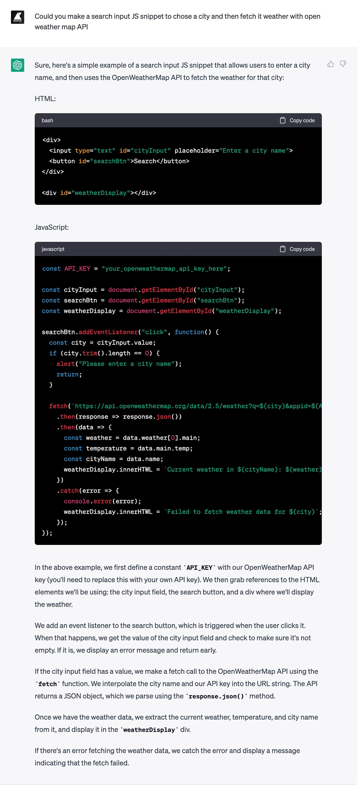
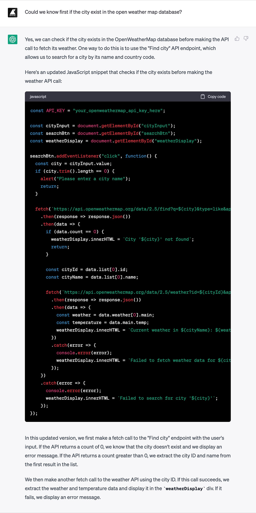
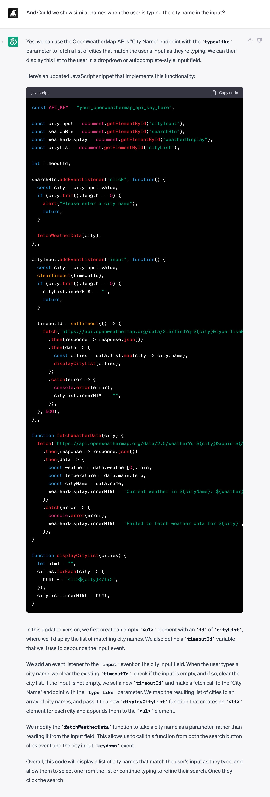

Como construir uma PWA com o ChatGPT antes que ele nos mande para o desemprego.
Publicado o 🐙 Puedes leer este post en español.A primeira IA que usei (conscientemente) foi a Midjourney: escrever um prompt, pressionar enter, esperar um instante e a imagem surgia do nada. Linda, sofisticada e estranha. Foi como presenciar um ato mágico.
Depois experimentei o Dall·E e o Stable Diffusion, igualmente espetaculares, mas no final o tédio venceu a magia. Não achei utilidade para mim, prefiro gerar imagens do meu jeito.
Os meses passaram e deixou-se de falar tanto sobre elas, havia novo brinquedo, o Chat GPT.
Demorei para usá-lo, mas a semana passada copiei um snippet de JavaScript de um site antigo, colei-o na caixa do chat e perguntei: "Could you optimize this code snippet?"" E o texto foi crescendo enquanto dizia, claro, você pode melhorar isso com aquilo, e aquilo com isso, etc. Deixo um exemplo para você. O exemplo fazia sentido e funcionava. Novamente um ato aparentemente mágico. Novamente a emoção. Mas agora também uma sensação diferente, um pouco de medo.
You're fired!
Só um pouquinho. A verdade é que não acredito em magia (exceto na de Tamariz), já vi gastar o adjetivo disruptivo na primeira década do século e a melhor maneira de perder o medo de algo é conhecê-lo.
Mãos à obra. Vamos pedir ao ChatGPT se ele pode escrever para nós uma PWA com a que conhecermos o clima da nossa vila, antes de nos enviar direitinhas ao desemprego.
Começamos com uma petição simples:
E na resposta obtemos um HTML, um snippet de JS e uma explicação detalhada de todo o código.
Sustituimos o your_openweathermap_api_key_here por uma key válida da API OpenWeatherMap e o código funciona. A única correção necessária seria a temperatura da cidade, pois indica que está em graus Celsius, mas na realidade o valor está em Kelvin.
Se o nome cidade não existe na base de dados da API, Portox por exemplo, obtemos um erro no fetch à API (com a mensagem que passamos no código, "Failed to fetch weather data for Sevilhax"). Também ocorre que se várias cidades compartilham o mesmo nome, os dados que vemos pertencem apenas a uma delas. Por exemplo, há cidades chamadas Porto em Portugal, Brasil e Espanha, mas só vemos o clima da cidade do Porto em Portugal.
Vamos ver se o ChatGPT pode melhorar isso:
Desta vez, acho que o ChatGPT não acertou. A única coisa que fez foi verificar se a cidade existe antes de fazer a busca na API, mas para o usuário não faz diferença em relação à versão anterior, exceto pela troca de mensagens, e não resolvemos o problema das cidades com o mesmo nome.
Vamos continuar:
Ops, agora você esqueceu de disponibilizar o exemplo de código HTML com a nova lista ul de id cityList.
E embora a lista seja exibida corretamente para cidades com o mesmo nome, não podemos clicar nelas, obtendo como resultado os dados de apenas uma delas ao pressionarmos o botão "Search".